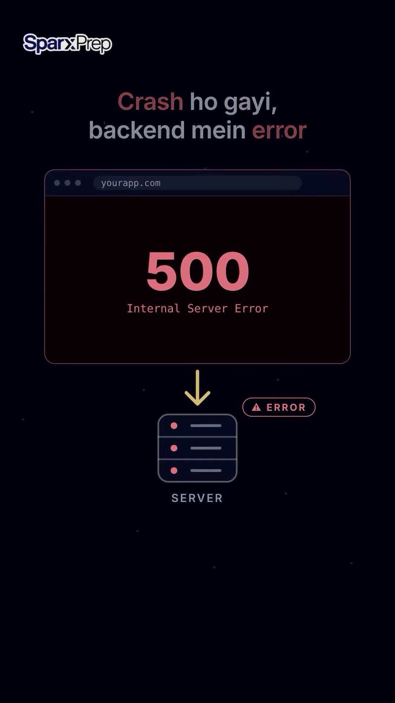
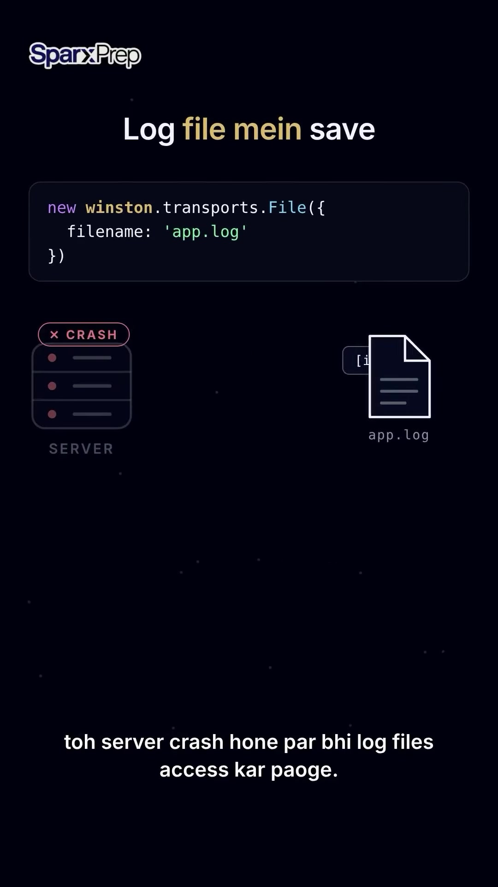

Executive Summary
During local development, engineers frequently rely on console.log() to inspect variables and debug execution flows. However, deploying applications to production with naked console logging creates severe operational blindspots: console logs are synchronous in certain runtime contexts, omit essential request metadata (status codes, IP, response times), and vanish instantly when container instances crash, restart, or scale to zero.
In this backend engineering guide, developer education platform SparxPrep contrasts the complementary responsibilities of two essential Node.js logging libraries: Morgan (the perimeter HTTP traffic recorder) and Winston (the structured event and error logging framework).
Core Visual Demonstrations


Morgan: The HTTP Perimeter "CCTV Camera"
Morgan operates as an Express/Fastify middleware sitting at the ingress layer. It automatically intercepts every incoming HTTP request and outgoing response, logging:
- HTTP Method & Route:
GET /api/v1/orders - Response Status Code:
200,401,500 - Payload Latency / Duration:
142.3 ms - Client IP & User-Agent string.
Morgan Setup Example
import express from 'express';
import morgan from 'morgan';
const app = express();
// Standard Apache/Nginx combined format in production
app.use(morgan(':method :url :status :res[content-length] - :response-time ms'));Winston: The Structured Application "Diary"
While Morgan only knows about the HTTP protocol layer, Winston captures the internal business logic state, caught exceptions, third-party API payloads, and database connection failures.
- Log Level Hierarchy:
error(0),warn(1),info(2),http(3),debug(5). Filter verbose logs in production while keeping error channels active. - Pluggable Transports: Stream error logs simultaneously to rotating files on disk, standard console, and cloud logging collectors (Datadog, Loki, AWS CloudWatch).
Production Winston Configuration with File Transports
import winston from 'winston';
const logger = winston.createLogger({
level: process.env.NODE_ENV === 'production' ? 'info' : 'debug',
format: winston.format.combine(
winston.format.timestamp({ format: 'YYYY-MM-DD HH:mm:ss' }),
winston.format.errors({ stack: true }),
winston.format.json()
),
transports: [
// Persist all errors to dedicated file
new winston.transports.File({
filename: 'logs/error.log',
level: 'error',
maxsize: 10485760, // 10MB rotation
maxFiles: 5
}),
// Combined application log
new winston.transports.File({
filename: 'logs/app.log',
maxsize: 20971520, // 20MB
maxFiles: 5
}),
],
});
// Stream Morgan through Winston
export const morganStream = {
write: (message: string) => logger.http(message.trim()),
};Production Summary
- Never ship raw
console.log: It lacks timestamps, log severity levels, and structural JSON formatting. - Use Morgan for traffic telemetry: Diagnose slow API endpoints and 4xx/5xx spikes instantly.
- Use Winston for application telemetry: Capture full stack traces and contextual error parameters into durable, rotating log files that persist across server crashes.